문제는 세금이야 이 멍청아 ! - 폴 크루그먼의 '미래를 말하다'
게시: 2018-11-29T06:30:00+09:00
최근 해외 언론에 트럼프의 작년말 법인세 대폭 인하 효과에 대한 기사가 실렸습니다.
Trump’s tax-cut party is officially over
https://finance.yahoo.com/news/trumps-tax-cut-party-officially-204513240.html
별로 긴 기사도 아니지만, 요약하면 '기업 세금을 대폭 깎아줬지만 트럼프의 선전과는 달리 그 혜택 대부분은 기업의 금고를 채우기만 할 뿐 노동자에게 돌아가는 몫은 극히 작더라' 라는 것입니다. 이 뿐만 아니라 트럼프의 법인세 인하를 비판하는 비슷한 내용의 기사는 매우 많습니다. (물론 반대로 찬양고무하는 내용도 많습니다.)
'Trump’s Tax Cut Hasn’t Done Anything for Workers'
'The Trump Tax Cuts Did One Thing: Give Rich People More Money'
'How the Trump Tax Cut Is Helping to Push the Federal Deficit to $1 Trillion'
https://www.nytimes.com/2018/07/25/business/trump-corporate-tax-cut-deficit.html
'No, Trump’s Tax Cut Isn’t Paying for Itself'
https://www.nytimes.com/2018/10/17/business/trump-tax-cuts-revenue.html
'FactCheck: have the Trump tax cuts led to lower unemployment and higher wages?'
목요일엔 과거 다음 블로그 내용을 퍼나르고 있는데, 오늘은 위 기사와 관련된 내용인 "문제는 세금이야 이 멍청아 !"를 퍼왔습니다.
이 글은 정치글이라기 보다는, 노벨상을 수상한 폴 크루그먼(Paul Krugman)이라는 경제학자의 저서 '미래를 말하다' (원제는 The Conscience of a Liberal, 즉, 어느 진보주의자의 양심)이라는 책을 읽고 난 뒤에 적은 독후감 내지는 요약 정도입니다. 책의 내용이 많다보니 지루하지 않게 요약하기도 쉽지 않네요. 이 자극적인 독후감 제목은 이 책 본문에 나오는 클린턴의 선거 구호인 '문제는 경제야 이 멍청아 !' (It's the economy, stupid ! 에서 따왔습니다.)
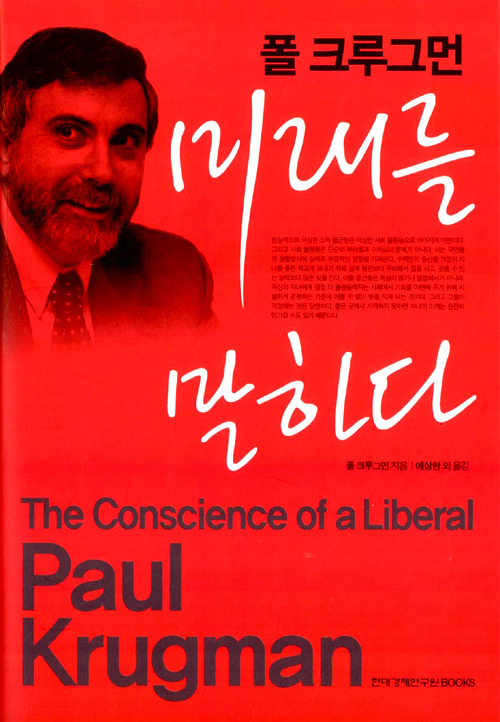
지루해하실 분들을 위해 인터넷 상에 글을 올릴 때의 필수 사항인 3줄 요약을 (감히) 저 나름대로 해보자면 이 책의 내용은 이렇습니다.
- 미국 역사상 가장 빈부격차가 작고 노동자들에게 풍요로운 시대였던 1930년 대 후반 부터 1970년 대 초까지의 '대압착시대'는 무거운 세금과 큰 정부 정책을 썼던 루스벨트 대통령의 뉴딜 정책의 산물이다.
- 빈부의 격차가 벌어지면서 정치 성향이 바뀌는 것이 아니라, 정치 환경의 변화로 부자들에 대한 세금이 가벼워지면서 빈부의 격차가 벌어지는 것이다.
- 지금도 우파에서는 부유층과 재계의 이익을 정치판에서 대변하기 위해 많은 돈을 들여 싱크탱크들과 언론기관을 운영하고 있는데, 진보진영에서는 이에 대적할 세력이 부족하다.
백 투 더 퓨처(Back to the Future)라는 1985년 영화가 있었습니다. 마이클 J 폭스라는 뜰 뻔 하다가 결국 못 뜬 배우가 주연을 맡은 이 영화는 워낙 유명해서 이 영화 안 보신 젊은 분들도 대략 그 영화의 줄거리는 다들 아시리라 믿습니다. 이 영화 속에서, 주인공이 과거로 돌아가는 시점은 1955년입니다. 왜 하필 돌아가는 배경이 1955년인가는, 일단 주인공의 부모가 주인공과 비슷한 나이이던 시절로 주인공이 돌아가 자신의 부모와 만나는 장면을 연출하기 위함이지요. 그러나 이유는 또 있습니다. 바로 그 시절이 미국 역사상 가장 근심 걱정없고 모든 것이 아름다웠던 황금 시절이기 때문이었습니다. 러시아, 아니 소련과의 핵전쟁 공포가 있기는 했습니다만 뭐 그다지 현실적이지는 않았고, 베트남 전쟁도 아직 시작되지 않았고, 히피들도 없었으며, 마약 문제도 아직 없았고 범죄율도 그다지 높지 않았습니다. 무엇보다, 사람들이 경제적으로 상당히 풍요로왔습니다.
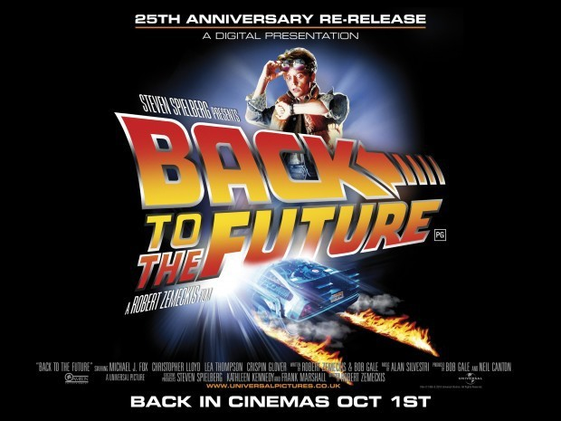
(이 영화에서는 타임머신 장치로 저 드로리안 스포츠카가 사용되었습니다만, 원래는 냉장고를 타임머신으로 할 생각이었다고 합니다. 그러나 어린이들이 이 영화를 보고 냉장고 안에 기어들어갔다가 질식사할까봐 스포츠카로 바꾸었다고 합니다.)
왜 시대에는 사람들이 경제적으로 풍요로왔을까요 ? 실은 모든 사람들이 경제적으로 풍요로왔다기보다는, 중산층의 비율이 상대적으로 더 두터웠다는 정도가 맞는 표현입니다. 원래 미국은 중산층의 비율이 높은 국가는 아니었습니다. 19세기 후반부터 1920년 대까지, 미국은 일부 계층이 석유, 철도, 철강 등의 산업을 독식하면서 빈부의 격차가 심했습니다. 영국이나 독일 등 유럽에서 이미 오래 전에 도입한 의료 보험이니 노인 연금이니 하는 기본적인 복지 제도도 전혀 존재하지 않았습니다. 그에 따라 부유층에 대한 세금도 상당히 낮은 편이었습니다. 당시 미국은 고전적인 애덤 스미스의 보이지 않는 손이 모든 것을 정리해줄테니 정부는 한쪽 구석에 찌그러져 가만히 있으라는 주의였지요. 노조요 ? 20세기 초 미국에는 많은 노조들이 있었고, 유럽을 휩쓸던 공산주의의 위협도 있고 해서, 이들을 바라보는 미국 정부의 시선도 무척 곱지 않은 상태였습니다. 이런 노조들은 기업과 정부의 무자비한 탄압을 받았습니다.
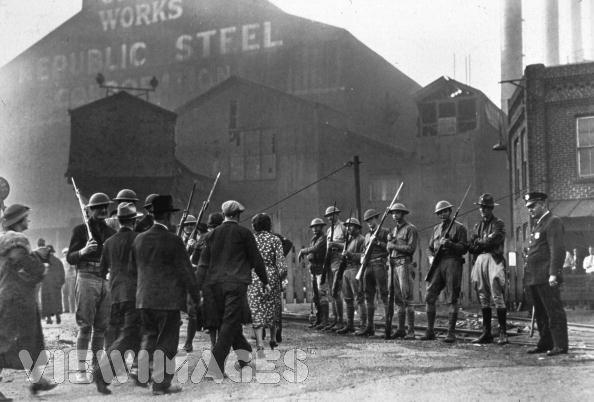
(미국도 영국도, 이런 노조의 파업이 많았고, 또 군경을 이용해서 잔인하게 탄압했습니다.)
그러다가 모든 것을 일시에 바꿔버리는 사태가 발생합니다. 바로 1930년부터 시작된 대공황이었지요. 이런 미증유의 사태 속에서 민주당의 루스벨트 (Franklin D. Roosevelt)가 대통령이 되어 뉴딜 (New Deal) 정책을 펼칩니다. 한마디로 여태까지 추구해왔던 작은 정부를 포기하고, 국가가 많은 세금을 거두어 많은 재정 지출을 하는 것이 뉴 딜 정책의 핵심이었지요. 루스벨트의 첫 임기 때 소득세 상한선은 63%까지 올라갔고, 두번째 임기 때는 무려 79%까지 올라갔습니다. 1920년 대 소득세 상한선이 24%였고, 유산에 대한 상속세 상한선도 20% 정도로 미미한 수준이었던 것에 비하면 부자들에게는 지옥같은 나날이었습니다. 1950년대 중반에는 한술 더떠서, 냉전 비용 충당을 위해 상한선이 91%(!!) 까지 올라갔습니다. 개인 뿐만이 아니라 기업 이익에 대한 평균 연방세도 1929년에는 14%에 불과하던 것이, 1955년에는 무려 45%까지 올라갔습니다.
하지만 뉴딜 정책이 부자들에게 가혹한 희생을 강요한 반면, 육체 노동자들에게는 큰 혜택을 베풀었습니다. 대공황에서 벗어나기 위해 안간힘을 쓰던 1930년대야 모두 힘들었겠으나, 1940년대 중반부터 1970년대 중반에 이르는 30년은 미국 노동자들에게는 황금기였습니다. 흔히 미국이 대공황을 벗어날 수 있었던 이유를 제2차 세계대전에서 찾는 경우가 많은데, 이는 근본적으로 잘못된 것입니다. 전쟁을 해서 수많은 사람을 죽이고 건물들을 때려부순다고 경제가 부흥할 수 있다면 지금은 왜 그러지 않겠습니까 ? 누군가는 비용을 대야 했는데, 그 비용은 결국 부자들이 세금을 내서 댔던 것이지요. 미국 노동자들이 1940년대부터 황금기를 누린 것은 바로 뉴딜 정책에 의해 많은 일자리가 생긴 것과 동시에, 노동 계층에 우호적이었던 미국 민주당 정권에 힘입어 노조 세력이 커졌기 때문이었습니다. 전체 노동자들이 다 노조에 가입된 것도 아니었고 고작 30% 정도의 노동자들만 노조 소속이었으나, 노조가 있는 큰 산업군에서의 임금 협상이 다른 기업들에게도 영향을 주었기 때문에 결과적으로 비노조원 노동자들도 임금 인상 혜택을 누릴 수 있었습니다.
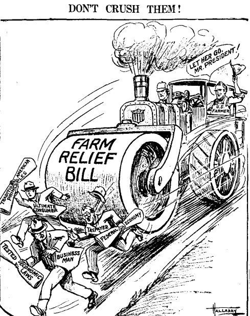
(이 그림은 1933년에 루스벨트가 시행한 농가 보조금 법안, 즉 the Farm Relief Bill 이 전통적인 미국적 가치를 훼손한다는 비판 만화입니다. 도덕적 해이 어쩌고 했던 이 비난에도 불구하고 이 법안은 꽤 긍정적인 결과를 낳았습니다. 1952년 드디어 민주당으로부터 백악관을 탈환한 공화당의 아이젠하워가 1954년 자신의 형에게 보내는 편지를 보면, "어떤 정당이든 사회보장이나 실업보험제도를 폐지하려고 한다거나 노동법과 농업지원 프로그램을 없애려든다면 다시는 그 정당을 찾아볼 수 없을 것입니다." 라고 쓰고 있습니다. 또한 그런 좌파적인 법안들을 폐지할 수 있다고 믿는 텍사스 석유 재벌 등 몇몇 기업인들이 있기는 하지만 그들은 무시해도 좋을 정도로 소수인데다 어리석은 자들이라고 평가절하했습니다.)
결과적으로 노동자 계층의 소득이 크게 향상되어 스스로를 중산층으로 여기는 가구의 퍼센티지가 크게 늘었습니다. 하지만 역시 이는 부유층의 희생을 수반했습니다. 이 책 본문 중에 이런 부분이 나옵니다. 1950년대 중반이 되면 부유층이 모여 살던 롱아일랜드의 골드코스트의 대저택들이 사라져 버립니다. 대저택들이 헐값에 팔려 헐린 뒤 그 부지에 중산층들이 살만 한 작은 집들을 건설하든가, 살인적인 상속세를 피하기 위해 비영리기관이나 정부에 기증된 것입니다. 지금도 그때의 대저택들이 컨트리 클럽이나 요양원, 수련원 등으로 사용되고 있다고 합니다.
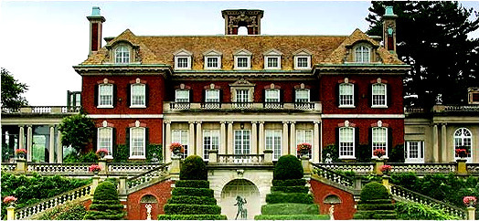
(영화 '위대한 개츠비'에 나왔던 저택들이 바로 그 롱 아일랜드의 골드코스트 저택들입니다. 구글에 long island gold coast mansions 라고 치면 볼만 한 그림들 많이 나옵니다. 크루그먼에 따르면, 당시 부자들이 이런 저택을 포기해야만 했던 이유 중 하나가, 일반적인 임금이 워낙 많이 올라서, 저런 저택을 유지하는데 필수적인 정원사니 하인이니 하는 인건비가 너무 많이 들어갔던 것이라고 합니다.)
그러다 1970년대 이후 보수화된 공화당이 집권하면서부터 이야기가 달라집니다. 여기에는 1970년대를 강타했던 석유 파동으로 인한 경제 위기와, 당시 크게 치솟은 범죄율, 그리고 베트남전 패배로 인한 동남아의 공산화와 소련의 아프간 침공 등으로 인한 안보 불안감이 크게 작용합니다. 우경화된 공화당 정권은 노조를 적극적으로 탄압했고, 또 이미 빈부 격차가 많이 줄어들어 더 이상 노조의 필요성을 느끼지 못했던 대중들은 노조에 등을 돌렸습니다. 또한 우경화된 공화당이 남부의 뿌리깊은 인종 갈등을 교묘하게 잘 활용한 것도 공화당 집권에 크게 공헌했습니다.
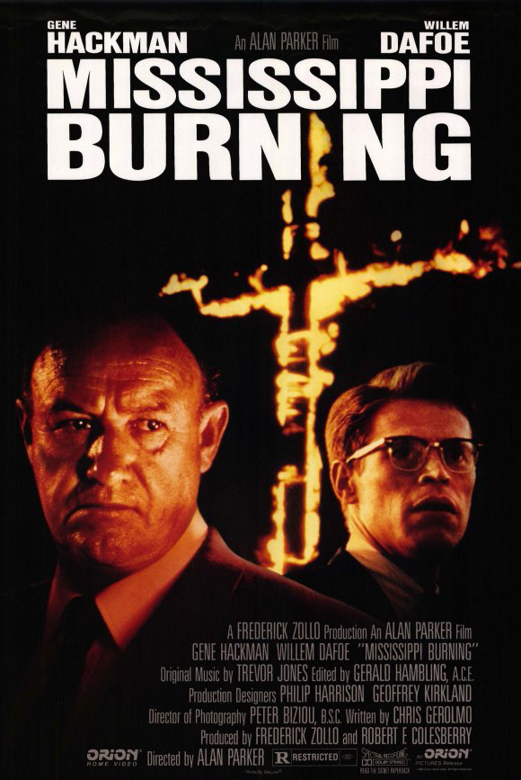
(1964년 3명의 민권 운동가 살해 사건 실화를 그린 영화 미시시피 버닝입니다. 미국 역사도 조금만 들춰 보면 정말 미국이 선진국 맞나 싶은 그런 이야기가 수두룩하게 나옵니다.)
저자 크루그먼은 책 속에서, '자신도 이 책을 쓰기 전에는 경제의 흐름에 따라 대중이 영향을 받아 정치 판도가 바뀐다고 믿어왔는데, 이 책을 쓰기 위해 자료를 수집하고 연구를 해보니 정반대더라, 즉, 정치 판도가 바뀌어 세금 제도와 사회 규범 등이 바뀌면 그에 따라 경제의 흐름이 바뀌더라' 라는 말을 하고 있습니다.
재계는 이 사실을 정확히 깨닫고, 자신들에게 유리한 방향으로 정치판을 이끌기 위해 많은 돈을 쓰고 있습니다. 미국 정치판도 우리나라보다 크게 우월하지는 않아서, 선거자금을 얼마나 동원하느냐가 선거에서의 승리에 지대한 영향을 끼칩니다. 재계로부터 많은 정치자금을 합법적으로 기부받는 정치인들이 재계의 이익에 반하는 법안을 함부로 낼 수 없음은 자명한 일입니다. 재계가 가장 싫어하는 것이 높은 수준의 사회복지입니다. 이는 필연적으로 높은 세율을 낳게 되는데, 사실상 돈은 대부분 재계에 있으므로 결국 그 부담은 재계가 지게 되기 때문입니다.
그래도 실제로 표를 가진 국민 대다수는 높은 세율과 그에 따른 많은 사회복지로 인해 혜택을 보게 되므로, 선거철에 그런 법안을 내는 의원이나 대통령을 뽑게 될 가능성이 많습니다. 그런 국민들을 설득하기 위해서 재계는 많은 싱크탱크 (think tank)를 운영하면서 '사회복지가 늘어나면 도덕적 해이가 생겨난다' '최저 임금제는 일자리 수를 줄여 오히려 서민 계층에게 불리하게 작용한다' '부자들에게 세금을 깎아줘야 서민들이 더 잘살게 된다' '의료보험을 민영화해야 국민들이 양질의 의료 서비스를 누릴 수 있다' 등등의 해괴하고 입증도 안된 괴담을 마치 역사 속에 엄연히 입증된 사실인 것처럼 늘어놓는다는 것입니다. 언론기관도 마찬가지입니다. 언론 재벌들은 단지 재계로부터의 광고 수익 뿐만 아니라, 부자인 자기 자신의 이익을 위해서도 그런 싱크탱크의 미심쩍은 연구 결과를 국민들에게 진실인 것처럼 홍보하는 것이지요.
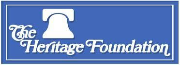
(헤리티지 재단은 자타가 공인하는 보수파 싱크탱크입니다.)
미국이라고 뭐 하바드 경제학과를 졸업한 학생에게 돈과 명예를 누릴 기회가 무궁무진한 것은 아닙니다. 그런 친구들에게 헤리티지 재단같은 유명한 싱크탱크에서 손을 내밀어 높은 연봉을 제시한다면 거절하기 어렵습니다. 또 자신에게 월급을 주는 세력이 어디인지 뻔히 아는 학자들이 자신의 고용주의 이익에 정면으로 배치되는 연구 결과를 발표하는 것도 매우 어려운 일입니다. 어쩌다 학자적 양심으로 옳은 소리했다가 파면 당한 학자의 사례도 이 책에서 제시됩니다. 크루그먼은 이런 보수파들의 대국민 홍보 전력이 막강한 것에 비해, 진보파의 전력이 무척 빈곤한 것에 우려를 표합니다. 사람은, 아무리 예일대 경제학 박사 학위를 받았다고 해도, 이 노곤한 세상의 돈 논리에서 크게 벗어날 수는 없거든요. 크루그먼이야 노벨상도 받은 워낙 유명한 학자이고 대학 교수라는 안정적인 직업이 있으니 이런 입바른 소리를 할 수 있지만, 모두가 그런 것은 아닙니다. 우리나라는 물론이고, 미국 대학 교수님들도 이왕이면 이런저런 재계 강연회에 나가서 두둑한 강연료를 받고 또 연구 비용 후원을 받는 것이 싫을 리가 없지요.
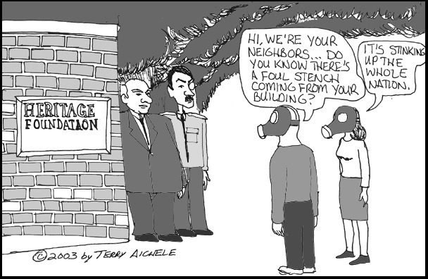
(만화는 헤리티지 재단에서 풍겨나오는 악취가 온나라를 더럽히고 있다고 비난하는 내용입니다. 보수파는 필연적으로 재계의 후원을 받기 때문에, 학문의 방향을 보수파 쪽으로 정한다는 것은 부와 명예의 기회가 그만큼 더 많아진다는 것을 뜻합니다. 물론 그만큼 똑똑한 사람들이 많이 몰리니까 그 안에서의 경쟁도 치열하겠지요.)
그래서 저도 이번 편에서는 어지간한 박사님들을 압도하는 '노벨상에 빛나는' 폴 크루그먼 교수의 저서에 대해 독후감을 쓴 거에요. 물론 노벨상을 받은 사람의 책이라고 해서 다 맞는 말만 쓴 것은 아닙니다. 가령 저 위에 소득세가 79%까지 올라갔다는 부분은 다소 오도하는 부분이 있을 수 있는 것이, 이는 당시 록펠러를 희생양 삼아 국민들을 달래려는 쇼우맨쉽이 들어간 부분이었습니다. 당시 저 세율에 해당할 정도로 돈이 많았던 사람은 록펠러 단 1명이었거든요. 또 (크루그먼 본인도 본문에 원인 중 다른 것들에 대해서 이미 썼습니다만) 40년대 노동자 계층의 소득 상승의 주요 원인을 오직 노조로만 보는 것은 옳지 않은 것 같습니다. 전쟁 통에 많은 젊은이들이 군대에 갔고 또 추가 이민자들이 대량으로 유입되는 일이 없었으므로 노동력이 크게 부족해진 것도 분명 원인 중 하나였습니다. 당시 루스벨트의 정부는 전쟁 당시 국가 경제 활동을 모두 통제했는데, 기업들이 부족한 노동력을 충원하기 위해 더 높은 임금을 제시하지 못하도록 정부의 승인없이는 임금 인상도 못하도록 할 정도였거든요. 또 전후 미국의 제조업이 사실상 거의 경쟁 없이 우위를 누릴 수 있었다는 점도 미국 노동자들이 계속 높은 임금을 받을 수 있었던 원인 중 하나입니다. (크루그먼은 이에 대해서도 본문에 이미 썼습니다.)
(전쟁통에 일손이 부족해 여성들에게도 일자리가 주어졌고, 결국 이는 여성 해방 운동에 큰 공헌을 했습니다.)
이 책에는 많은 인용과 사례가 나옵니다만, 저소득층 어르신들이 '누가 뭐래도 빨갱이만 때려잡으면 돼' 라고 앵무새처럼 되뇌이거나, 일베에서 뭔가 정곡을 찌르는 댓글이 달리면 '네다홍'이라며 무조건 전라도를 까고보는 현상에 대해 인용하고 싶은 부분이 있습니다.
미국 노동자들의 황금기였다는 시절을 30년이나 누리고도 아직 미국이 선진국이라면 당연히 갖추고 있어야 할 국가의료보험 제도가 없다는 것이 무척 의아하실 겁니다. 실은 그에 대한 시도가 1946년에 있었습니다. 트루먼이 단일 지불체계의 국민의료보험을 제안했던 것입니다. 현대의 미국보다, 당시의 미국은 이런 국민의료보험을 도입하기가 훨씬 유리했습니다. 아직 민간의료보험이 활성화되지 않아 국민의료보험과 정면으로 경쟁해야 하는 보험회사들의 세력이 크지 않았고, 또 GDP 대비 의료비 총액도 지금의 16%보다 훨씬 적은 4.1%에 불과했습니다. 국민의료보험이 도입되면 이익에 큰 손해를 보게 될 제약회사들의 로비도 아직 약했고요. 그런데도 실패했습니다. 왜였을까요 ?
(모두가 욕하는 미국의 의료보험제도... 더 좋은 것을 가질 기회가 있었으나, 미국 서민층은 그 기회를 스스로 차버렸습니다. 왜였을까요 ? 증오와 두려움 때문이었지요.)
일단 미국의학협회가 무려 500만 달러 (현대 시세로 2억 달러)에 달하는 비용을 들여 대대적인 반대 운동을 펼쳤기 때문이었습니다. 이들은 심지어 가족주치의들에게 자신들이 맡고 있는 동네 주민들에게 반대표를 던지도록 설득하라는 지시를 내릴 정도였습니다. 당시 동네 주치의들은 그 동네의 신사계급이자 지식인계급으로서 존경받는 위치에 있었으니 그 영향력이 적지 않았습니다. 이들은 '의학의 사회주의화'가 얼마나 나쁜 것인지를 열심히 광고했습니다.
그런데, 그보다 더 결정적인 영향을 끼친 것이 있었습니다. 바로 흑인들이었습니다. 많은 남부 지방에서, 국민의료보험이 체계화되면 지역 병원에서 흑인 환자도 차별없이 받아야 할 것이라는 이야기가 돌았던 것입니다. 당시 백인들이 다니는 병원에는 흑인들이 출입할 수 없었는데, 국가 의료보험제도가 정착되면 자신들이 다니는 점잖은 병원에서 결국 흑인 환자들도 받아야 할 것이라는 두려움이 있었던 것입니다. 이런 인종 차별주의 때문에, 대부분이 저소득층이었기 때문에 국민의료보험 제도로 인해 큰 혜택을 보게 될 남부 백인들이 반대표를 대량으로 던진 것이었습니다.
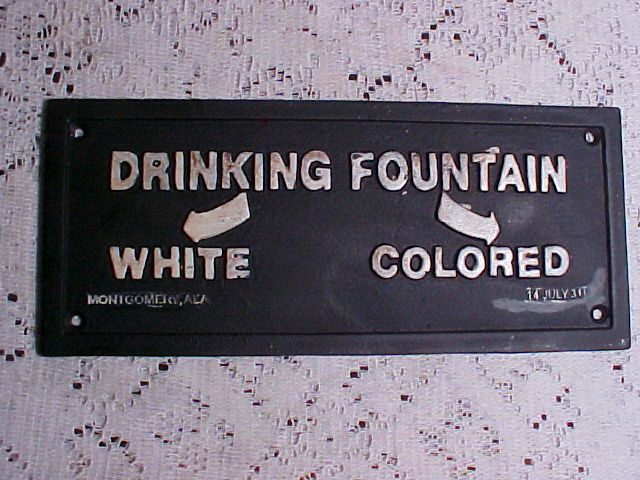
(처음에는 당연히 백인들 용은 좋은 것으로, 흑인들 용은 개판으로 꾸며졌으나, 나중에는 '동일한 수준으로만 맞춰주면 백인용과 흑인용을 구분하는 것은 괜찮은 거 아니냐' 라는 식으로 발전했습니다. 저는 궁금한 게, 저 시절 가령 일본인이나 중국인이 미국에 관광 갔다면 백인용으로 가야 했을까 흑인용으로 가야 했을까 하는 것입니다.)
우리나라의 사정과 다른가요 ? 일베가 보수층을 대변한다면 상당히 거북한 분들이 (좌건 우건) 많겠습니다만, 제가 보니까 일베에서 가장 열심히 두들겨 패는 것이 전라도와 외국인 노동자들입니다. 특히 전라도 출신이라는 것은 무조건 까야 하고 모든 논리와 진실을 다 묻어버리는 것이 정당화되는 요소더군요. 그런 말도 안되는 차별주의 덕분에, 미국의 의료 체계는 '정말 미국이 선진국 맞나 ?'라는 의구심을 들게 할 정도로 엉망이고, 우리나라의 민주주의도 많이 후퇴한 것 같습니다. 또 미국이나 우리나라나 보수층이 매우 요긴하게 이용하는 단골 메뉴이기도 하고요. 이 책에서 인용되는 부분을 보면, 현재 미국에서 '소련을 무너뜨리고 감세로 경제 호황을 이끌어낸' 가장 존경받는 대통령 중 1명으로 뽑히는 레이건이 캘리포니아 주지사로 출마할 때 행한 연설 중 하나가 흑인에 대한 공격이었습니다. 즉, '만약 시민들이 집을 임대 놓을 때, 그 임대인이 유색인종인지에 따라 임대를 거부할 권리를 당연히 누려야 한다' 라며 노골적인 인종 차별주의를 지지했던 것입니다.
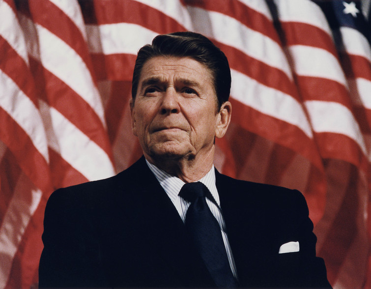
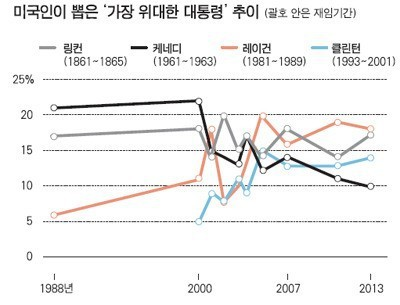
(세상에, 레이건의 인기가 2013년 당시엔 JFK는 물론 링컨마저 뛰어 넘었다는군요 !!)
이 아래부터는 독후감이 아니라 제 개인적인 견해...라기보다는 넋두리입니다.
저는 스스로를 확고한 중산층이라고 생각합니다. 또 댓글 다시는 분들 중 일부는 저를 좌파라고 생각하시는 것 같습니다만, 사실 알고 보면 저는 우파입니다. 제가 이 사회에서 나름 풍족하게 먹고살 만 하고, 또 증세하면 아무래도 받는 혜택보다는 세금 부담 증가가 더 클 것 같은 계층인데, 저는 이런 상황을 더 오래도록 유지하고 싶은 것이 당연하지 않겠습니까 ? 그런데 일부분들이 제가 좌파라고 오해하실 정도로 증세와 복지 확대를 외치는 것은 이유가 있습니다. 급진적인 좌파 정치인들이 자리를 잡지 못하기를 원하기 때문입니다.
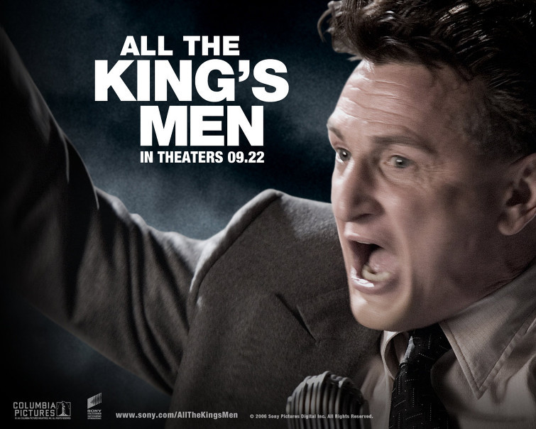
(자신이 여당의 허수아비에 불과했다는 것을 깨닫고 대오각성한 숀 펜이 아무도 거들떠보지 않는 시골 장터 한 구석 돼지우리 옆에 세워진 연단에서 진심 어린 호소를 통해 redneck, 즉 남부의 저소득 백인 노동자들의 지지를 얻어내는 장면은 참 인상 깊었습니다. 하지만 이 영화는 앤소니 홉킨스까지 나오는 초호화 배역에도 불구하고 완전 망했습니다. 제가 봐도 그 징면 이후로는 재미가 없더라구요.)
All the King's Men이라는 숀 펜과 쥬드 로 주연의 영화가 있었습니다. 영화 배경은 1950년대 미국이고, 숀 펜은 한물 간 사회 운동가로서 여당 측의 협잡에 휘말려 야당의 표 분산을 위해 주지사 선거에 출마한 속물로 나옵니다. 그러다 그가 뭔가 대오각성하여 정말 '저 가진자들에게 한방 먹이자' 라는 슬로건을 내걸고 혼을 다한 선거 운동을 펼쳐 가난한 농민들의 지지를 받아 결국 정말 루이지애나 주지사에 당선되고 맙니다. 그는 선거 공약을 지키기 위해 온갖 도로망 건설이며 학교 건설, 복지 혜택 확대 등을 실시하는데, 이는 세금을 내야 하는 기업체들에게 고스란히 부담으로 돌아오는 일이었습니다. 쥬드 로는 신문기자로서 그런 숀 펜을 취재하다 결국 그의 밑에서 일하게 되는 사람 역을 맡았는데, 영화 속에서 원래 루이지애나의 부유층 가문 출신으로 나옵니다. 그런 그가 부유층 인물들과 식사를 하며 나누는 대사 중에 이런 장면이 나옵니다. 즉, 어떤 기업가가 '저런 비용은 결국 누가 내는 것인가 ? 저건 결국 루이지애나를 파멸로 이끌 행동들이야'라고 한탄하자 쥬드 로는 그에게 이렇게 말합니다.
"애초에 여러분들이 정말 루이지애나의 서민들을 위해 뭔가 일을 했다면 저런 인물이 주지사로 당선되는 일은 없었을 겁니다."
일부 자칭 보수파 분들은 파이가 커져야 결국 노동자 계층에게 돌아가는 몫도 더 커지므로, 분배의 문제에 매달리지 말고 일단 기업이 잘되도록 부자와 기업에 대한 지원만 열심히 하면 결국 노동자 계층도 잘 살게 된다고 주장합니다. 과연 그럴까요 ? 제 생각은 이렇습니다.
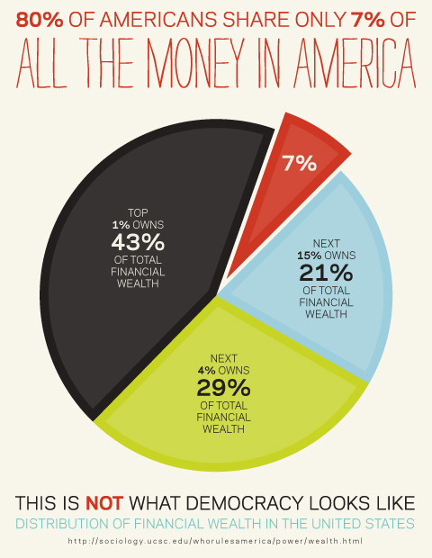
(미국 시민 80%가 소유하는 금융 자산은 전체 금융 자산의 7%에 불과하다고 주장하는 그림인데, 정말인지는 모르겠습니다.)
두드리지 않으면 열리지 않습니다. 미국이나 영국의 노동자 계층이 산업 혁명을 거치면서 자연스럽게 중산층이 되었다고 보십니까 ? 절대 그렇지 않습니다. 그런 나라들에서도 많은 노동 운동이 있었고, 그런 노동 운동은 항상 가혹한 탄압을 받았습니다. 비스마르크가 자애로운 마음으로 국민연금이나 국민의료보험 등을 만들었나요 ? 절대 그렇지 않습니다. 사회주의 세력을 잠재우기 위해 선수를 친 것이었습니다. 노조가 없는 삼성그룹이 가장 많은 임금을 주는 것이, 과연 노조가 없기 때문에 그런 것이라고 보십니까 ? 삼성이 누구보다도 노조를 두려워하기 때문에, 노조가 발생하지 않도록 노조가 있는 다른 기업들보다 더 많은 임금을 주는 것입니다. 이런 예에서 결국 노조의 역할이 없었던 것이라고 보십니까 ? 저는 그렇지 않다고 봅니다.
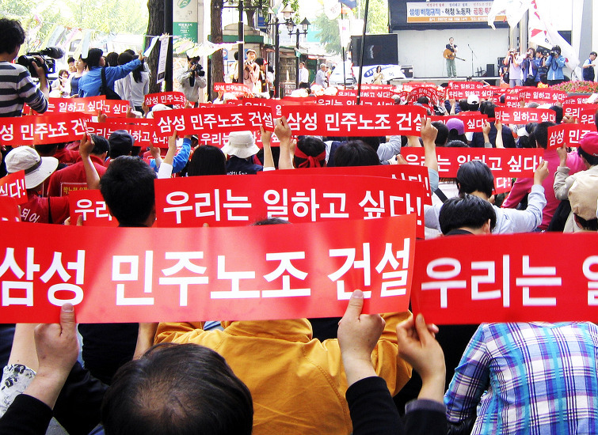
(삼성이 노조를 탄압하는 방법 ? 간단합니다. 다른 회사 노조가 힘겨운 싸움 끝에 받아낸 임금 인상분보다 더 많은 임금을 삼성 노동자들에게 주는 것입니다. 그런데 다른 회사에도 노조가 없다면 ? 삼성이 과연 그래도 많은 임금을 줄까요 ?)
앞서 피를 흘린 많은 사람들의 희생이 있었기 때문에, 이제는 모두가 1표씩의 투표권을 가지게 되었고, 따라서 구태여 폭력적인 노동 운동이나 혁명을 하지 않아도 됩니다. 저는 그런 폭력에 적극 반대합니다. 그러나 그렇게 비싸게 얻은 투표권을 어떻게 사용하느냐는 별개의 문제입니다. 별 다른 고민없이 보수층이 주입하는 보이지 않는 위협에 떨거나 부자 감세 신화 같은 것을 믿고 자신의 이익에 반하는 측에 표를 던지는 것도 자유입니다. 하긴 현재 야당이라는 인간들의 무능함, 구태와 부패를 보면 그쪽도 답이 안나오는 것은 마찬가지입니다. 하지만 국민들이 부자 감세 따위의 허무맹랑한 이론에 속지 않는다는 목소리는 내야 한다고 생각해요.
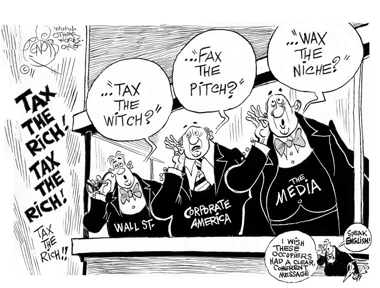
(부자들이 누진세를 내는 것을 영광된 일로 받아들이는 것이 위대한 사회의 필수 요소이고, 더 나아가 강력한 방첩기관보다 더 효율적으로 빨갱이들을 발붙이지 못하게 하는 최고의 방법입니다.)
PS. 미국이 대공황에서 성공적으로 빠져나올 수 있었던 것은 뉴딜 정책이 아니라 제2차 세계대전 덕분이었다는 말이 있지요. 그런 큰 전쟁을 치르면 증세 없이도 모든 문제가 사라지는 것인지, 아니면 누군가 그 전쟁 비용을 주머니를 털어 갚았던 것인지 궁금해서 미국의 국채와 소득세 최고 세율의 연도별 그래프를 찾아보았습니다. 아래 첫번째 그래프가 GDP 대비 미국 국채의 변화 추이입니다. 그 아래는 소득세 최고 세율의 변화 그래프입니다.
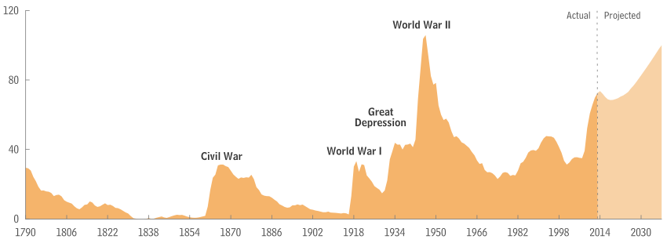
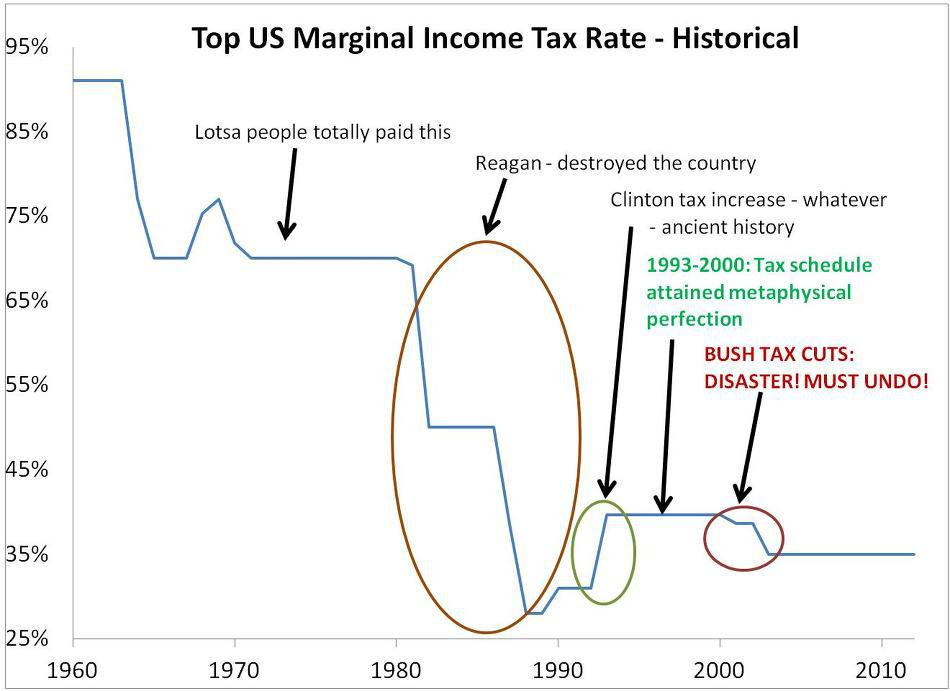
보시다시피, 전쟁 비용은 (일부 영국과 소련에게서 받아낸 빚을 빼고) 고스란히 국채로 남았습니다. 그 빚은 한마디로 미국 부유층의 주머니를 수십년 동안 무려 70~90%의 중과세로 털어내며 조금씩 갚았던 것이고요. 1980년이 될 때까지도, 미국의 부유층은 무려 70%의 소득세를 부담하고 있었더라고요. 이번에 처음 알았습니다. 그러다가 레이건이 '부자의 세금을 깎아줘야 미국 경제가 살아난다' 라며 대규모 감세를 했고, 미국의 국채는 다시 늘어나기 시작했습니다. 물론 이견들이 많겠습니다만, 이 그래프를 보면 미국이 빚더미에 오른 것은 과다한 의료비와 복지 혜택 때문이 아니라, 부자 감세와 전쟁 때문으로 보입니다.
부자들에게 세금을 깎아줘야 기술의 발전이 있고 산업이 발전한다고요 ? 수십년간 자유세계 영공을 지킨 맥도널 더글라스의 F15 전투기는 최고 세율이 90%이던 1960년대에 개발이 시작되어 1972년에 첫 비행을 했고, 역시 수십년간 컴퓨터 세계를 지배한 IBM 메인프레임 S/360은 1964년도에 발표되었습니다. 세금 탓 하지말고 그들을 본받으셔야 합니다.